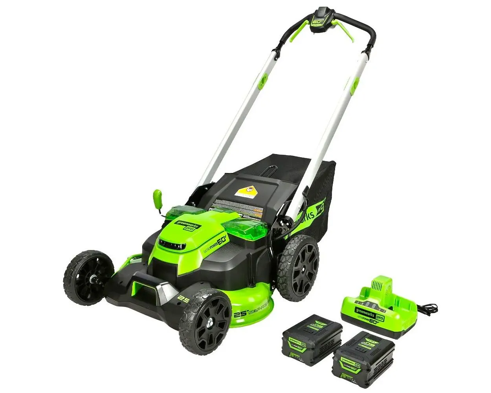
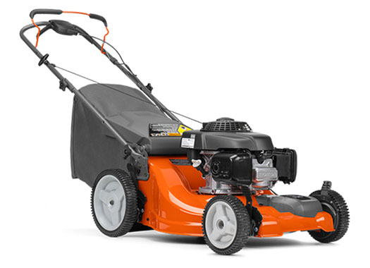
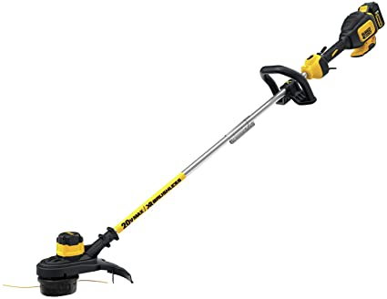
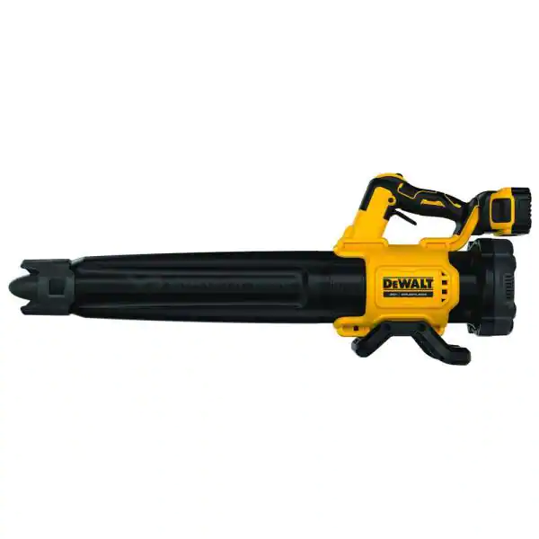

Our Equipment
Here Carroll Football Lawn Care we only use the best equipment to ensure the best quality.
For our lawn mowers we use a HUSQVARNA POWER EQUIPMENT 21 IN. HONDA GCV-160 SELF-PROPELLED and a PRO 60V 25” BRUSHLESS CORDLESS SELF-PROPELLED LAWN MOWER
.

For our Trimmers we use the DeWalt 20V MAX 13 in. 20 V
.
We also carry a Dewalt 20V MAX XR Brushless Handheld Blower
.
We are in the proccess getting and converting more of our equipment into battery powered so we can not only protect the environment, but avoid any mechanical errors also.